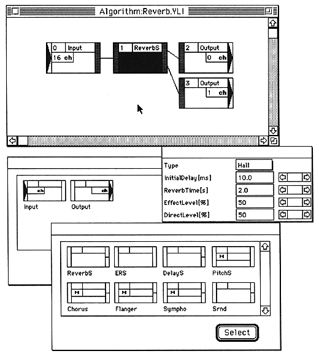

Return to menu | Go to next page
-
1. Introduction
-
About this manual
- This document explains how to operate SCSP / DSP / Linker.
-
■ Overview
- Link "modules" prepared for each single function to create one "executable DSP microprogram". There are two types of modules: “EFFECT module” and “I / O module”. The link order of modules and input / output connections can be specified using graphics on the screen.
The linker displays the following screen.

Return to menu | Go to next page